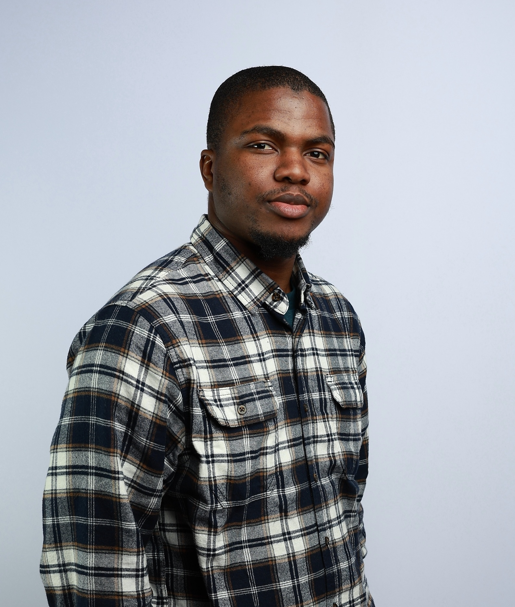

Welcome to my home page!

- All about Me, Myself and I.
- Lagos and Minna, Nigeria.
- Email: horlamilekanyusuf AT gmail DOT com | yusuf DOT m1701932 AT st DOT futminna DOT edu DOT ng
Profile Summary
- I am an Electrical, Electronics, and Computer Engineer specializing in AI-powered power systems, smart grids, and intelligent automation. My work focuses on creating data-driven solutions for energy optimization, grid resilience, and sustainable infrastructure by using tools like reinforcement learning, physics-informed neural networks, advanced Kalman filtering, and time-varying phasor techniques. I have practical experience in IoT, home automation, renewable energy integration, and edge computing, with projects that include smart energy monitoring, digital twins, and resilient control strategies for inverter-based resources. Beyond research, I am passionate about innovation for sustainability, volunteering, and creating solutions that connect cutting-edge technology with real-world impact. My long-term goal is to become a leading researcher in advancing AI-powered modeling, protection, and control of renewable-rich power systems to ensure a secure and sustainable energy future.
- Research Interests: Power System Stability | Control and Optimisation | Non-linear Systems | Edge computing | Machine Learning | Edge AI | Wireless communication | Internet of Things | Intelligent systems | Cyber-Physical systems
LekanTheFirst
Education
B.Eng. in Electrical and Electronics Engineering
Federal University of Technology Minna, Nigeria
December 2017- January 2024
Awards and Honors
- Vice Chancellor’s Award of Commendation, January 2024
- The Nigerian MATLAB Coding Challenge, October 2023
- The Emerging Technologist Award: Millennium Fellowship Class of 2023, September 2023
- IEEE ASYPC 2023 Ambassador, August 2023
- The Engineering Project Exhibition (EPEX) 2023: First Runner-up Team, June 2023
- The Dean’s Honor Award: Outstanding Academic Grades, 2019 – 2024
- The Petroleum Technology Development Fund (PTDF) Scholarship, 2019 – 2024
Academic Memberships and Affiliations
- IAENG Society of Electrical Engineers (ISEE)
March 2024
- IAENG Society of Artificial Intelligence (ISAI)
March 2024
- Nigerian Society of Engineers (NSE)
April 2024 – Present
- Society of Petroleum Engineers (SPE)
March 2023 – Present
- International Association of Engineers (IAENG)
March 2022 – Present
- Institute of Electrical and Electronics Engineers (IEEE)
April 2018 – Present
News
- My new paper got accepted
September 2025
- Published a new paper on Modelling and Analysis of Power System Stability
August 2025
- Promoted to the R&D Team Lead at Patobe Homes and Automation
April 2025
- Completed my National Youth Service Corps - NYSC
April 2025
- I was selected for the African Fellowship for Young Energy Leaders (AFYEL)
September 2024
- Selected among the top 100 African Future Leaders
August 2024
- Started Patobe Homes and Automation as a Graduate Trainee
July 2024
- Confered with a bachelor's degree from the Federal University of Technology Minna
Februaury 2024